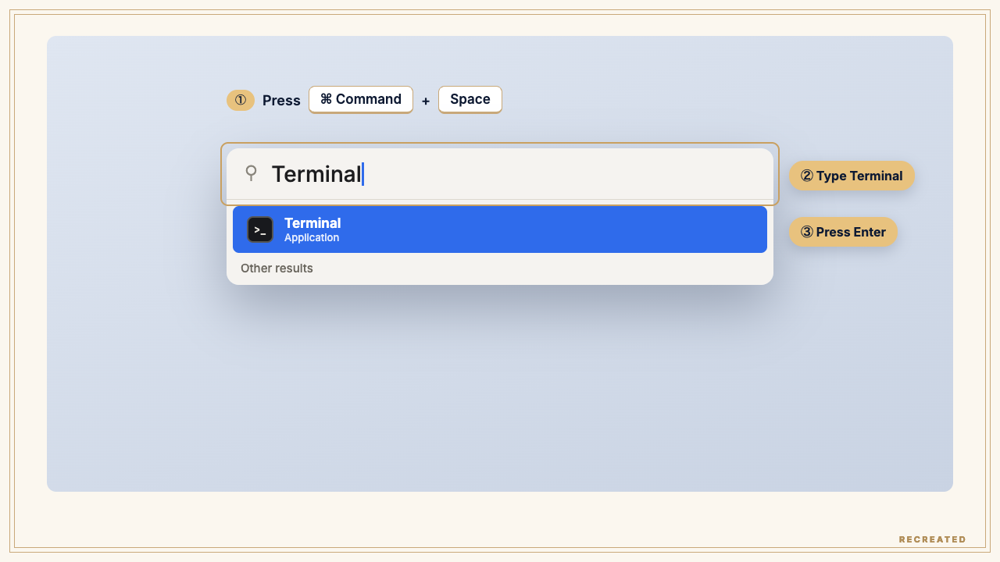
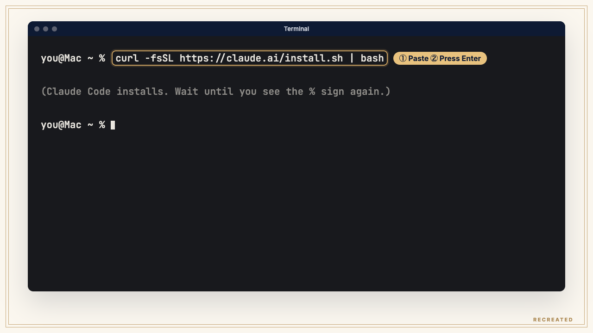
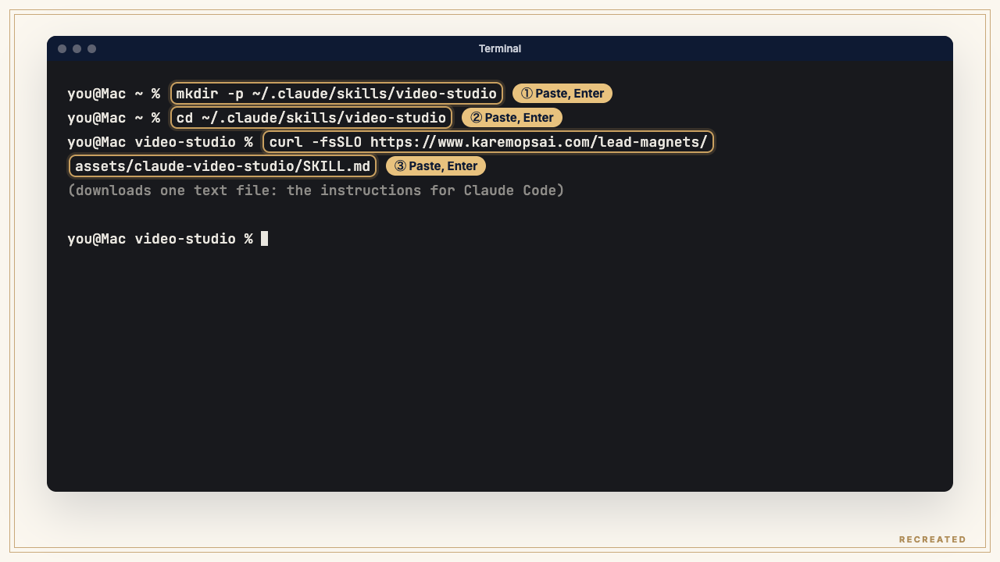
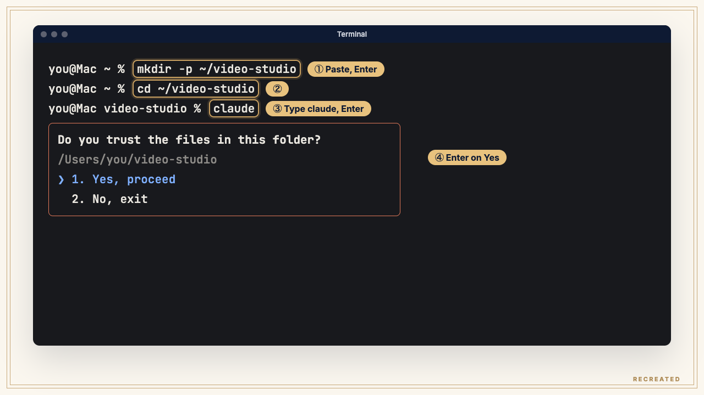
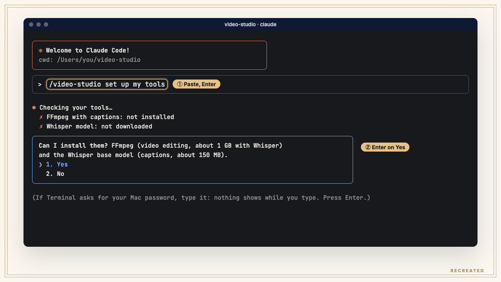
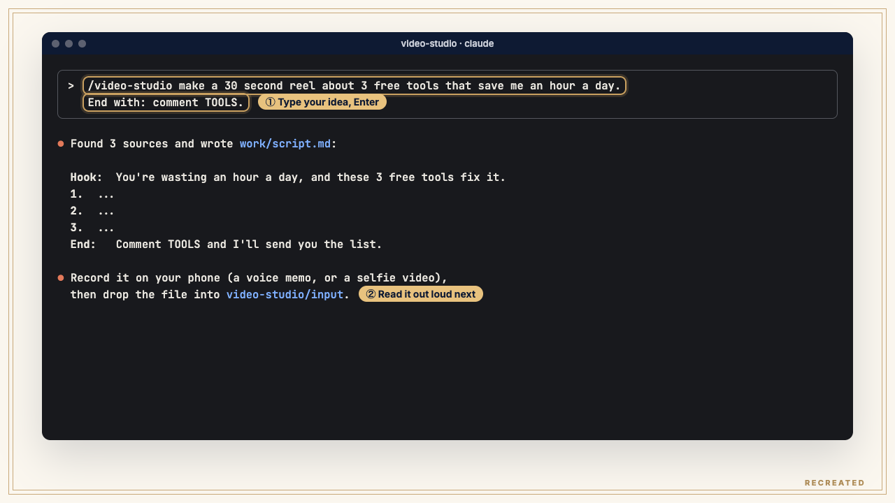
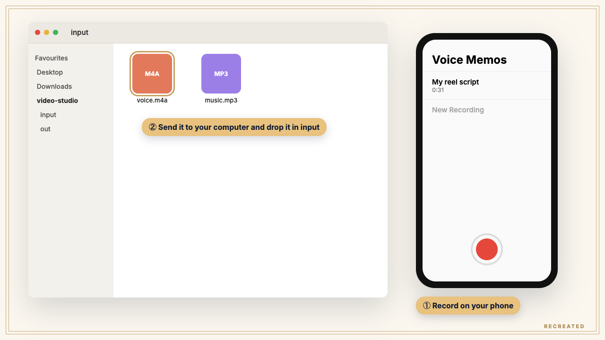
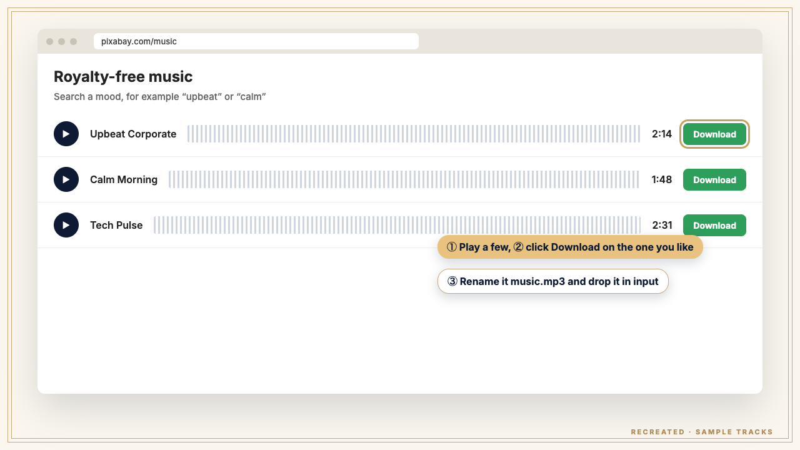
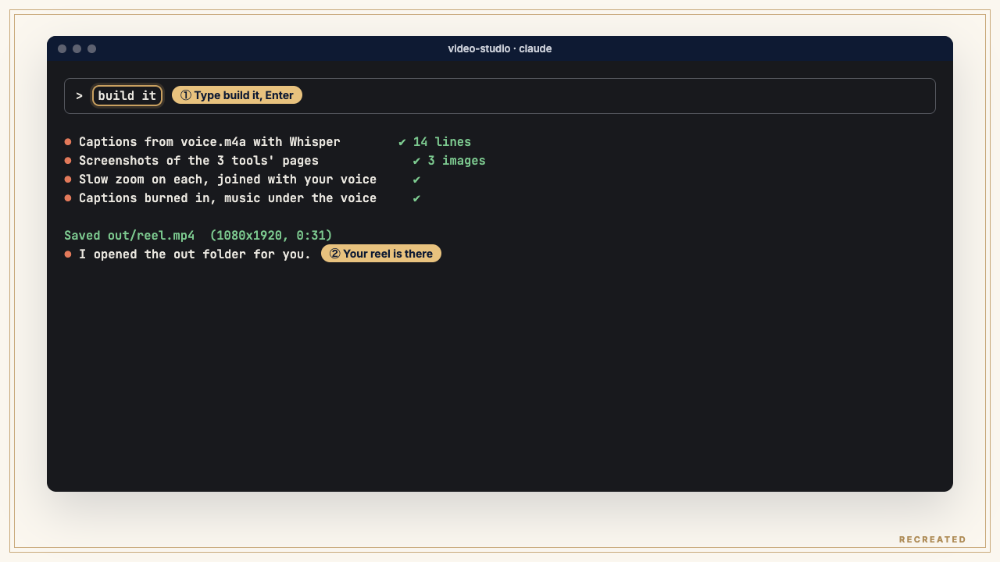
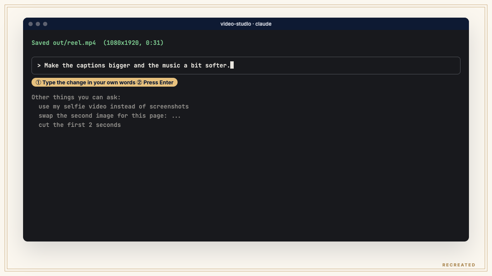

One idea in, a finished vertical reel out: script, captions, screenshots, music and the final mp4. A free starter skill, built from free tools, that runs on your own computer.فكرة واحدة تدخل، وفيديو عمودي جاهز يخرج: النص، والترجمة، ولقطات الشاشة، والموسيقى، وملف mp4 النهائي. مهارة مجانية للبداية، مبنية من أدوات مجانية، وتعمل على جهازك أنت.
> mkdir -p ~/.claude/skills/video-studio
cd ~/.claude/skills/video-studio
curl -fsSLO https://www.karemopsai.com/lead-magnets/assets/claude-video-studio/SKILL.mdAdd the free video studio skill with copy and paste, let Claude Code set up the tools, then make your first reel: give it an idea, record your voice on your phone, and type build it. Plus 6 ready prompts for your next reels.أضف مهارة استوديو الفيديو المجانية بالنسخ واللصق، ودع Claude Code يجهّز الأدوات، ثم اصنع أول فيديو: أعطه فكرة، وسجّل صوتك على هاتفك، واكتب build it. ومعها 6 أوامر جاهزة لفيديوهاتك التالية.
This guide gives you a starter video studio inside Claude Code. You give it an idea. It researches it and writes the script. You record your voice on your phone. It captions your voice, takes screenshots of the pages you name, puts a free music track under it and renders a 1080x1920 mp4, ready to post.يعطيك هذا الدليل استوديو فيديو للبداية داخل Claude Code. تعطيه فكرة، فيبحث فيها ويكتب النص. تسجّل صوتك على هاتفك. فيضيف الترجمة لصوتك، ويلتقط صور الصفحات التي تسمّيها، ويضع موسيقى مجانية تحته، ويصدّر ملف mp4 بمقاس 1080x1920 جاهزًا للنشر.
It's built only from free, well-known tools: Claude Code writes and runs everything, Whisper turns your voice into captions, FFmpeg cuts and renders the video, Chrome takes the screenshots and Pixabay gives you the music. It all runs on your own computer, nothing is uploaded.مبني فقط من أدوات مجانية ومعروفة: Claude Code يكتب كل شيء ويشغّله، وWhisper يحوّل صوتك إلى ترجمة، وFFmpeg يقصّ الفيديو ويصدّره، وChrome يلتقط صور الشاشة، وPixabay يعطيك الموسيقى. كل شيء يعمل على جهازك، ولا يُرفع أي شيء.
The reel mentions OpenMontage. Our security scan flagged it, so here's a safer starter you build yourself. We wrote this skill from scratch and scanned it with NVIDIA SkillSpector: it came back SAFE, 0 issues. It's simple on purpose: basic captions, screenshots with a slow zoom, music under your voice.يذكر الفيديو أداة OpenMontage. فحصنا الأمني نبّه عليها، لذلك هذه بداية أكثر أمانًا تبنيها بنفسك. كتبنا هذه المهارة من الصفر وفحصناها بأداة NVIDIA SkillSpector: النتيجة SAFE، بلا أي مشكلة. وهي بسيطة عن قصد: ترجمة أساسية، ولقطات شاشة مع تقريب بطيء، وموسيقى تحت صوتك.
Never opened Terminal? This guide is for you. On every screen a gold ring shows what to click or paste, and gold numbers show the order. Steps 1 to 5 happen once. After that, every new reel is steps 6 to 10.لم تفتح Terminal من قبل؟ هذا الدليل لك. في كل شاشة حلقة ذهبية تبيّن ما تضغطه أو تلصقه، وأرقام ذهبية تبيّن الترتيب. الخطوات من 1 إلى 5 مرة واحدة فقط. بعدها كل فيديو جديد هو الخطوات من 6 إلى 10.
Terminal is a window where you paste a line and press Enter. That's all you do in it, no coding. On a Mac: press Command and Space together, type Terminal, press Enter. On Windows: click Start, type PowerShell, press Enter.Terminal نافذة تلصق فيها سطرًا وتضغط Enter. هذا كل ما ستفعله فيها، بلا برمجة. في Mac: اضغط Command وSpace معًا، واكتب Terminal، واضغط Enter. في Windows: اضغط Start، واكتب PowerShell، واضغط Enter.

Copy the line below, click inside the Terminal window, paste it (Command V on a Mac, Ctrl V on Windows) and press Enter. Wait until the % sign comes back. On Windows, use the second box. Already have Claude Code? Skip to step 3.انسخ السطر أدناه، واضغط داخل نافذة Terminal، والصقه (Command V في Mac أو Ctrl V في Windows) ثم اضغط Enter. انتظر حتى تعود علامة %. في Windows استخدم المربع الثاني. عندك Claude Code أصلًا؟ انتقل إلى الخطوة 3.
curl -fsSL https://claude.ai/install.sh | bash
irm https://claude.ai/install.ps1 | iex

A skill is one text file that teaches Claude Code a job. Paste the 3 lines below one at a time, Enter after each. They make a folder for the skill and download the file into it. Want to read it first? Open the link: it's plain English.المهارة ملف نصي واحد يعلّم Claude Code مهمة. الصق الأسطر الثلاثة أدناه واحدًا تلو الآخر، مع Enter بعد كل سطر. تنشئ مجلدًا للمهارة وتنزّل الملف إليه. تريد قراءته أولًا؟ افتح الرابط: إنه إنجليزية بسيطة.
mkdir -p ~/.claude/skills/video-studio cd ~/.claude/skills/video-studio curl -fsSLO https://www.karemopsai.com/lead-magnets/assets/claude-video-studio/SKILL.md
mkdir "$HOME\.claude\skills\video-studio" -Force; iwr https://www.karemopsai.com/lead-magnets/assets/claude-video-studio/SKILL.md -OutFile "$HOME\.claude\skills\video-studio\SKILL.md"

Paste the 3 lines below, Enter after each. They make a folder called video-studio for your reels and open Claude Code inside it. Claude Code asks if you trust the folder: press Enter on Yes. The very first time it also asks you to log in: press Enter and log in to your Claude account in the browser.الصق الأسطر الثلاثة أدناه، مع Enter بعد كل سطر. تنشئ مجلدًا اسمه video-studio لفيديوهاتك وتفتح Claude Code داخله. يسألك Claude Code هل تثق بالمجلد: اضغط Enter على Yes. في المرة الأولى فقط يطلب منك تسجيل الدخول: اضغط Enter وسجّل الدخول إلى حساب Claude في المتصفح.
mkdir -p ~/video-studio cd ~/video-studio claude
mkdir "$HOME\video-studio" -Force; cd "$HOME\video-studio"; claude

Paste the line below into Claude Code and press Enter. It checks what's missing (FFmpeg for video, Whisper for captions) and asks before installing each one: press Enter on Yes. If it asks for your computer password, type it and press Enter. This takes 5 to 15 minutes the first time.الصق السطر أدناه في Claude Code واضغط Enter. يتحقق مما ينقص (FFmpeg للفيديو، وWhisper للترجمة) ويسألك قبل تثبيت كل منهما: اضغط Enter على Yes. إذا طلب كلمة مرور جهازك فاكتبها واضغط Enter. يستغرق هذا من 5 إلى 15 دقيقة في المرة الأولى.
/video-studio set up my tools

Type /video-studio, then your idea in your own words, and press Enter. Say who it's for and how it should end, for example comment TOOLS. Claude Code researches it and writes a 30 to 45 second script with a hook, 3 short points and your ending.اكتب /video-studio ثم فكرتك بكلماتك، واضغط Enter. قل لمن هي وكيف تنتهي، مثلًا comment TOOLS. يبحث Claude Code فيها ويكتب نصًّا من 30 إلى 45 ثانية فيه افتتاحية و3 نقاط قصيرة وخاتمتك.
/video-studio make a 30 second reel about 3 free tools that save me an hour a day. End with: comment TOOLS.

Read the script out loud into the Voice Memos app (or film a selfie video if you want your face in it). Send the file to your computer (AirDrop, WhatsApp to yourself, or email) and drag it into the input folder inside video-studio. Can't find the folder? Type open the input folder in Claude Code.اقرأ النص بصوت عالٍ في تطبيق Voice Memos (أو صوّر فيديو سيلفي إن أردت أن يظهر وجهك). أرسل الملف إلى جهازك (AirDrop، أو واتساب لنفسك، أو البريد) واسحبه إلى مجلد input داخل video-studio. لا تجد المجلد؟ اكتب open the input folder في Claude Code.

Open Pixabay Music, search a mood (for example upbeat or calm), play a few and click Download on the one you like. Rename the file music.mp3 and drag it into the same input folder. Pixabay's music is free to use in your videos, no credit needed. Skip this step for no music.افتح Pixabay Music، وابحث عن مزاج (مثلًا upbeat أو calm)، واستمع لبعضها واضغط Download على التي تعجبك. غيّر اسم الملف إلى music.mp3 واسحبه إلى مجلد input نفسه. موسيقى Pixabay مجانية للاستخدام في فيديوهاتك بلا ذكر للمصدر. تجاوز هذه الخطوة إن لم ترد موسيقى.

Go back to Claude Code, type build it and press Enter. It captions your voice, takes the screenshots, adds a slow zoom, puts the music under your voice and saves reel.mp4 in the out folder, then opens the folder for you. A 30 second reel takes 2 to 5 minutes.ارجع إلى Claude Code، واكتب build it واضغط Enter. يضيف الترجمة لصوتك، ويلتقط صور الشاشة، ويضيف تقريبًا بطيئًا، ويضع الموسيقى تحت صوتك، ويحفظ reel.mp4 في مجلد out، ثم يفتح لك المجلد. فيديو من 30 ثانية يستغرق من 2 إلى 5 دقائق.
build it

Not quite right? Type the change the way you'd text a friend and press Enter, for example make the captions bigger, music a bit softer, or use my selfie video instead of screenshots. One change per message works best. Then post it.ليس كما تريد تمامًا؟ اكتب التعديل كأنك تراسل صديقًا واضغط Enter، مثلًا make the captions bigger، أو music a bit softer، أو use my selfie video instead of screenshots. تعديل واحد في كل رسالة هو الأفضل. ثم انشره.

انسخ الأوامر والنصوص كما هي باللغة الإنجليزية، فهي تعمل بدقة أكبر.
/video-studio make a 30 second voice-only reel about [3 free tools that save me an hour a day]. Use a screenshot of each tool's homepage, one per beat. End with: comment [TOOLS] and I'll send you the list.
/video-studio I put a selfie video in the input folder. Add captions in the lower third, away from my face. Put the music from input softly under my voice.
/video-studio make a 30 second reel that walks through [my website address]. 4 screenshots, one per section, a slow zoom on each. Write the script first and wait for my voice memo.
/video-studio research [this week's news about AI tools for small businesses]. Write a 40 second script with 3 points and list your sources. Then wait for my voice memo.
/video-studio make a reel comparing [doing invoices by hand] with [doing them with Claude Code]. Use 2 screenshots I'll put in input, one for each side. Hook in the first line, call to action at the end: [comment INVOICE].
/video-studio turn this post into a 30 second script I can read out loud: [paste your post here] Keep my words where you can. Then wait for my voice memo.
Make one reel this week with your own voice, post it, and see how long it took you. Then make the next one faster.اصنع فيديو واحدًا هذا الأسبوع بصوتك، وانشره، وانظر كم استغرق منك. ثم اصنع التالي أسرع.
AI operator and educator. I build AI systems for business owners: content, ads and automation, with Claude Code at the center. If you want it built for you, DM me.مشغّل ومعلّم في مجال الذكاء الاصطناعي. أبني أنظمة ذكاء اصطناعي لأصحاب الأعمال في المحتوى والإعلانات والأتمتة، ويكون Claude Code في قلبها. إذا أردت أن أبنيها لك، راسلني.